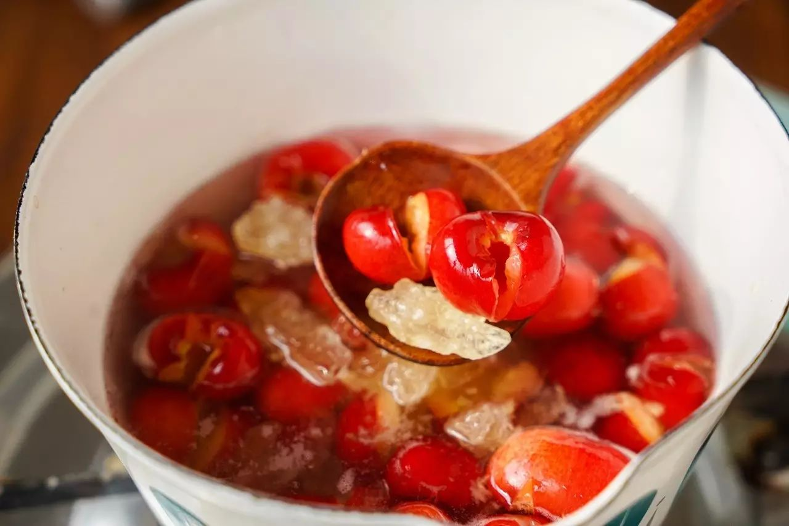
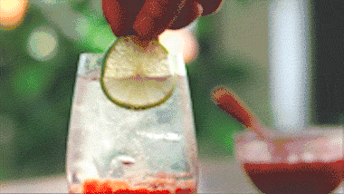
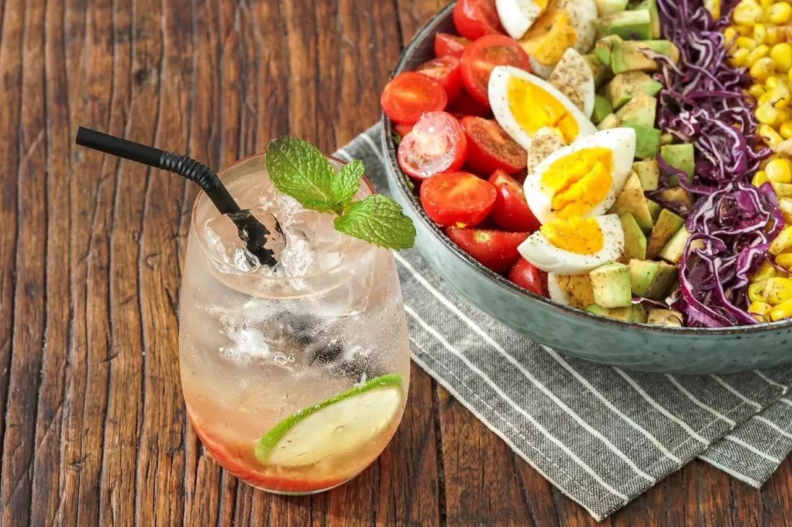
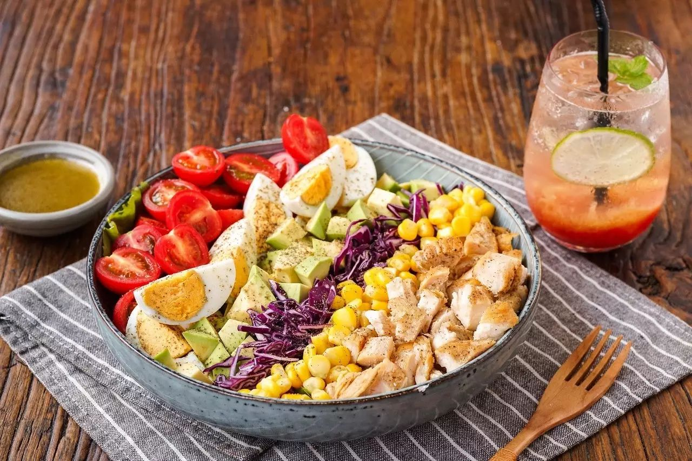

Cherry / Soda Water / Mint Leaves / Rock Sugar / Lemon
1. Wash the cherries, remove the stems and pits. Add rock sugar and enough water to cover the cherries. Bring it to a boil, then reduce to a simmer and cook until it thickens. Remove from heat and let it cool.
2. Spoon two tablespoons of the cherry jam into the bottom of a glass, then fill the glass with soda water until it's about 80% full. Add two slices of lemon and garnish with mint leaves. Enjoy!
 